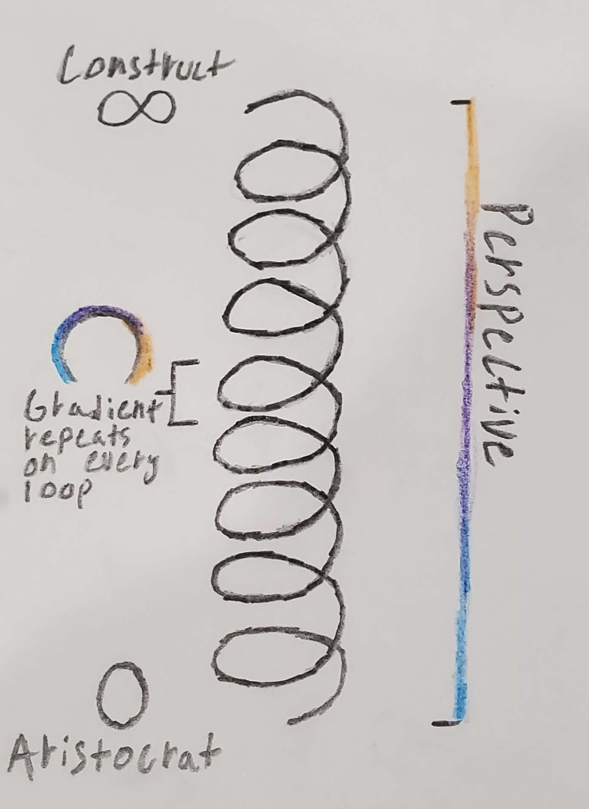

-
ROOTS
A root is what we call either an endo or an exo. An archetype is made up of exactly one endo and one exo.
Roots may be referred to by their formal names (Tempest, Construct, Scholar, Trickster, Aristocrat, Practitioner), or merely by which color represents them.
ENDOS
“The Drive”
The endo is the driving force of a person. Their raw desires, aspirations, motivations, and needs are all represented by the endos. The endo constitutes base natural inclinations, emotional instincts, and can also give some insight into how one might talk to others. Everyone has at least some of every endo, with the most dominant determining their archetype and the second-most dominant (called a lean) determining their sub-archetype.
There are three endos:
RED

TEMPEST

“The Unstoppable Force”
Proverb: Leader*
The Tempest is driven and ambitious, a powerful force to be considered. Upon deciding their target, a Tempest will find a path, whether that be below, over, or through. They are often impulsive and reckless, tending to only consider the consequences of their actions only after committing the action. Their stubbornness is often their biggest pro and con at the same time.
Competitive when mature
Combative when immatureGREEN

TRICKSTER

“The Gatekeeper”
Proverb: For the Show*
The Trickster may be the most personable and the most devious. Quick to conversate, the first to know every thing that could be used against you. A Trickster will naturally trend towards deceit; it is, most times, a core part of their personality and something they view as enjoyment. When mature, they are generally very capable in social settings, capable of drawing connections and info out of conversations effortlessly. In effect, they are either bards or politicians, with no in-between.
Intuitive when mature
Apathetic when immatureYELLOW

SCHOLAR

“The Infinite Eyes”
Proverb: Support*
The Scholar is a silent observer, watching interactions and behaviors and subtly committing to memory. Often the most underestimated due to wide-eyed curiosity, though they are often much more capable than what one would expect. They have a tendency to be anxious people, doubting themselves or worrying that they aren't doing enough.
Observant when mature
Gullible when immature
EXOS
“The Filter”
An exo is the filter of any given archetype, depicting how one interacts with their environment. A logical exo will be more literal and conclusive, whereas an empathetic exo will be more considerate of other people. The Purple exo, being between logicality and empathy, naturally is the worst of both (looking at you, Skye). The exo forms the second half of one's archetype, and is also the same metric used for your perspective.
Desire and aspiration generated by the endo will be filtered and modified by the exo accordingly. As well, information and stimulus being received by one's environment will undergo a similar effect. The amount and nature of modification is based on what color the exo is, as well as whether it is regressed or mature.
There are three exos:
BLUE

ARISTOCRAT

“The Warmth”
Proverb: For the People*
The Aristocrat holds empathy for the few, protection from the many. A personable soul that holds those closest to an esteem higher than the entire population. An Aristocrat is the most susceptible to negative emotions out of all the roots, even moreso than Scholars. When isolated and alone, they regress rapidly, somtimes developing depression. It is this vulnerability that allows them to connect so well to others and make friends.
Approachable when mature
Melancholy when immaturePURPLE

PRACTITIONER

“The Answer”
Proverb: The Job*
The Practitioner is a skeleton key, taking practical measures with fluid execution. They rarely steer from the path they have decided, and offer judgment to those who oppose. Practitioners are generally the most responsible out of any root, though their nature puts them at odds with Tricksters by default.
“purple parent theory”
Practical when mature
Judgmental when immatureORANGE

CONSTRUCT

“The Immovable Object”
Proverb: Top of Class*
The Construct is immutable, logical, and calculative. Their answers always come in exact facts, and questions that can't be calculated are deemed unknown. Constructs are rarely affected by adversity, often dealing with or ignoring the issue. Constructs excel at logical reasoning, placing them firmly above the other roots when it comes to intellectual endeavours such as maths, programming, or science, but this can come with the drawback of impacted abstract thinking or even creativity.
Analytical when mature
Complacent when immature
-
LEANS
A person's endo is essentially a pie chart graph of each color. The endo that has the largest slice in this graph will dictate the primary color of your endo, but the "second place" color will determine how your endo "leans". Your lean affects what side of your archetype's regression chart you fall into.
PERSPECTIVES
The perspective is not a fully understood idea as of right now. It is a relatively novel concept™. However, I will still attempt provide the current knowledge we have of it.
A perspective, at its core, is the second exo used for determining one's sub-archetype. In this way, it is similar to one's lean, however, unlike leans, your perspective can match your primary exo.
Perspectives lie on a kind of coil, with the Construct's perspective lying infinitely high, and the Aristocrat's perspective lying at 0. Each "loop" on this coil has the entire exo gradient on it.
img is subject to change (the handwriting looks bad rn lmao)
The possibility of everyone starting with a blue perspective has been brought up, and is currently tenuously agreed upon. However, this thesis is very unstable and may change in the future.
PRESSURES
Within an archetype, the endo will dicate what kind of pressure a person exudes while the exo, will dicates what kind of pressure a person is the best at handling.
There are three kinds of pressures:
EXECUTIONAL PRESSURE
Tempests and Practitioners are the executional roots, known as "do-ys". A Tempest will often want to do things immediately, act before thinking, and pester others to ask to do things. Practitioners are the best at handling this, being able to plan and execute the raw desires.
SOCIAL PRESSURE
Tricksters and Aristocrats are the social roots, know as "feel-ys". A Trickster often seeks out conversation, affirmation, and will naturally take up social space within a room. This could be as simple as locking people in conversations or inviting themselves to events. Aristocrats are the best at handling social pressure, being approachable and empathetic by nature.
MENTAL PRESSURE
Scholars and Constructs are the mental roots, know as "think-ies". A Scholar is inquisitive and curious, often asking a lot of questions and requiring explinations more often than others. Constructs are the best at handling mental pressure, usually finding enjoyment in these types of conversations and are well equiped to answer the questions Scholars pose.
COMPATIBILITY
While this is far from the only factor, pressures do affect compatibility and how well one gets along with another. This means that people with matching pressures on opposite sides are going to theoretically get along well; a Trickster might be naturally drawn to an Aristocrat, et cetera. This leaves three combinations of "perfect pairs" with double matching pressures: Lovers and Maestros, Inquisitors and Masterminds, and Captains and Conductors.
While opposing endo/exo combinations are best, having matching pressures in any capacity will be a positive thing.
CHORUS ARCHETYPES
This system of pressures means there are three archetypes that only have one type of pressure: Executives, Performers, and Geniuses. These people will have the easiest time working within themselves, as they handle themselves the best, but will have the hardest times communicating and handling others, as there are four archetypes they share zero pressures with, instead of the single archetype the other archetypes share zero pressure with.
-
ARCHETYPES
An archetype (also referred to as a "super-archetype") is a general classification of one's personality. They are what culminates from someone's endo and exo. They provide a baseline psychological model of a given person's mind.
Your archetype is not set in stone, and will fluctuate rapidly during adolescence as you develop and grow. Even in adulthood, it is possible to change your archetype, though it is difficult and requires either immense effort or a large enough event to incite change.
Additionally, your archetype's maturity may change too, oftentimes much more frequently than the archetype itself will change. Your maturity will vary based off your environment, your archetype, your lean, and a whole slew is unknowable other factors.
It should be noted that "The archetype models are examples of perfect balance, which nobody has," and that "The archetypes are more checkpoints than they are example of real people."
There are nine archetypes in total, one for each unique endo-exo pair.
CAPTAIN

Captains are an unrelenting force. They will be quick to do, only explaining the meaning of their actions post-execution.
EXECUTIVE

An Executive will find a task and uncover it's resolution at all costs. It's not a question of why, but rather a path to execution that must be found.
MASTERMIND

A Mastermind can be many things, but often, they are exactly what they need to be. Their goals are calculated, confirmed, checked, and executed at their own pace.
PERFORMER

Performers have tight circles and a sharp tongue. They are the best at gaining an audience and the best at discovering others' strengths and weaknesses, for whatever purpose they may desire.
CONDUCTOR

A Conductor tracks those around them, keeping constant tabs on their surroundings.. Information is valuable, and there's always something that makes others useful to a Conductor, for better or for worse.
MAESTRO

A Maestro will not be moved, only convinced. They fill the space they are given and will not retract that they have been offered without substantial force. Rather than fight, they simply won't move.
LOVER

A Lover will find peace among others inspired by the darkness within themselves. They will hold up those around then, though their somber tones may act against them at their worst.
INQUISITOR

The Inquisitor is a quiet superpower. They organize and execute unto themselves, waiting for a purpose to relay the things they’ve uncovered. A thick, quiet shell hides infinite potential.
GENIUS

A Genius is watchful, but often only speaks when spoken to. They may struggle to communicate their findings, as their minds speak words that tongues do not. This leads to their greatest discoveries being squandered unless fostered.
SUB-ARCHETYPES
The sub-archetype is constituted by one's lean and perspective. As it is not composed of your primary root pair, it is much more susceptible to fluctuation than your super-archetype.
The sub-archetype is influenced the most by your environment, social conditioning, life experiences, and traumas
-
REGRESSION
Regression occurs when one's personality collapses due to pressure or being overwhelmed emotionally. It comes in two distinct forms: momentary (acute stress) and long-term (trauma-based dysfunction).
MOMENTARY REGRESSION
Momentary regression is a temporary outburst of emotion or a shutdown of part of the mind. It typically occurs in high-stress environments, where stakes are high. Constructs are the most resistant to this form of regression, while Aristocrats are particularly susceptible to it.
SUSTAINED REGRESSION
Sustained regression is the result of a traumatic event, with a greater and longer impact the younger the victim is. Sometimes, resolving and overcoming the trauma can effectively neutralize this, however it is not guaranteed and, more often than not, there is no full recovery from this form of regression. No root is more or less susceptible to this form of regression.
MATURITY
Maturity is the degree to which one fits within societal norms. An immature person tends to be less likeable, more difficult to communicate with, and mentally unstable, whereas a mature person is capable of self-control and typically is pleasant to conversate with.
This is not a definite metric — sometimes, an immature person is likeable exactly because of their erraticism, or perhaps any other possible factor out there; there is no "one-size-fits-wll" when it comes to likeability.
-
NOTES
N/A (WIP)
KNOWN EXAMPLES
CAPTAINS
— Moonchi (@moonchi0301)EXECUTIVES
— Eko (@eko_thefirst)— Diamond (@)— Tranquilotl (@tranquilotl)MASTERMINDS
— Oridont (@oridont)— SageBuilder (@.sagebuilder)PERFORMERS
— The Elf Mage (@theelfmage)— Soup (@avalondown)CONDUCTORS
— London (@strawberryman_)MAESTROS
(@)LOVERS
— Sapphire (@thesapphirelady)— Sylis (@sylis001)INQUISITORS
— Rain (@rain.is.falling.)— Skye (@s.k.y.e.)GENIUSES
— Tie (@tie_guy.) (Supposedly™)— Chief (@masterchieflf)